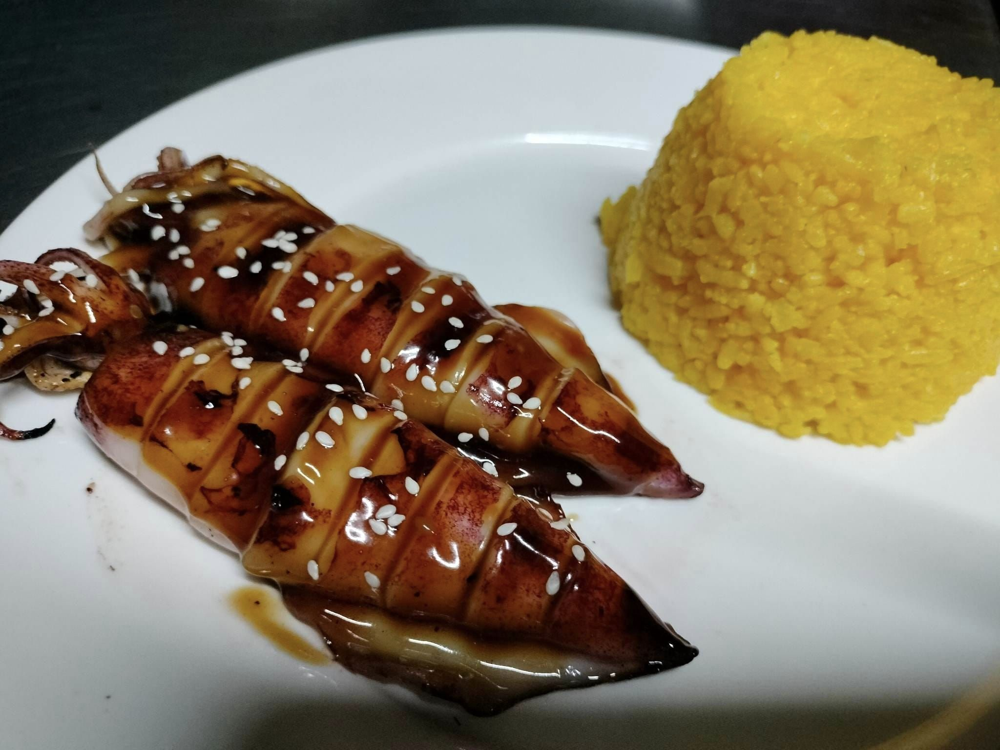
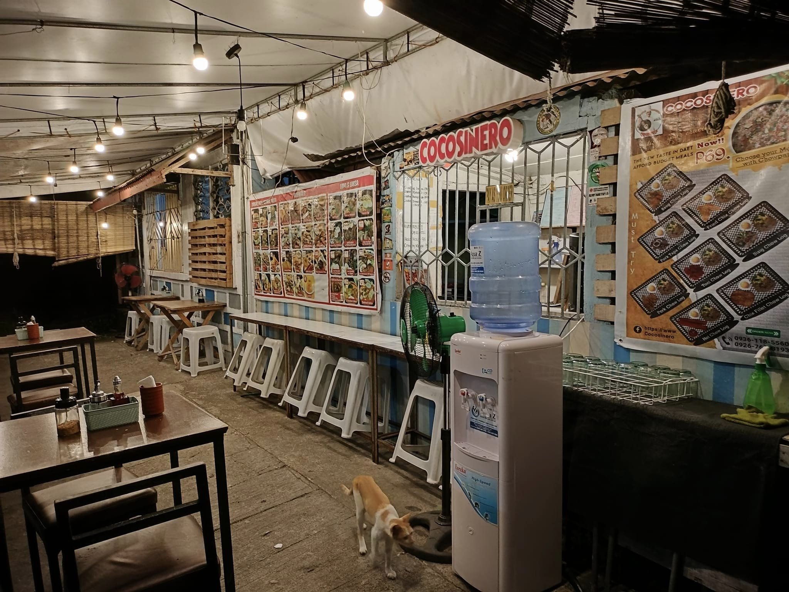

<!DOCTYPE html>
<html lang="en">

    <meta charset="UTF-8">
    <meta name="viewport" content="width=device-width, initial-scale=1.0">
    <title>Cocosinero | About Us 
    </title>
    <link rel="stylesheet"href="https://unpkg.com/boxicons@latest/css/boxicons.min.css">
    <link rel="preconnect" href="https://fonts.googleapis.com">
    <link rel="preconnect" href="https://fonts.gstatic.com" crossorigin>
    <link href="https://fonts.googleapis.com/css2?family=Poppins:wght@300;400;500;600;700;800;900&display=swap" rel="stylesheet">
    <link rel="stylesheet" href="/MRB/CSS/css_about/cocosineroAboutUs.css">
    <link rel="preconnect" href="https://fonts.googleapis.com">
    <link rel="preconnect" href="https://fonts.gstatic.com" crossorigin>
    <link href="https://fonts.googleapis.com/css2?family=Poppins:wght@300;400;500;600;700;800;900&family=Rubik:wght@500&display=swap" rel="stylesheet">
    <script src="https://kit.fontawesome.com/a076d05399.js" crossorigin="anonymous"></script>
</html>
<body>

    <header>
        <h1><a href="../Index/index.html">Cocosinero</a></h1>
        <ul class="navList">
            <li><a class="homeAct" href="../Index/index.html">Home</a></li>    
            <li><a class="qstoryAct" href="../html_aboutUs/cocosineroAboutUs.html">About Us</a></li> 
            <li><a class="menuAct" href="/MRB/HTML/html_menu/cocosineroMenu.html">Menu</a></li> 
            <li><a class="contactAct" href="/MRB/HTML/html_contact/cocosineroContact.html">Contact</a></li> 
        </ul>

    </header>
    
    <main>
        <section>
            <div class="quality-roots">
                
                    <div id="section-one">
                        <h1 class="text-line">About Us</h1>
                        <div id="info-p"><p>The main branch operates as a<br> semi self-service establishment, <br>open to everyone and accesible to all.</p>
                        <a  class ="read-more-link" href="#idchef" >Read More</a>
                        </div>
                    </div>
            </div>
        </section>
        
        <section>
            <div class="text-four">
                '
                    <div class="section-four">
                        <h1 class="text-four" id="idchef">KNOW MORE ABOUT US</h1>
                        <div class="info-four">
                            <p>Cocosinero Lomi House is a full-time venture, and it has been thriving for approximately 3 and a half years.
                            The business originated from customer requests and widespread belief in our offerings.started promoting online since July 16, 2020 and began offering dine-in services on October 18. Our prominence is credited to social media and our unwavering commitment to excellent service. What sets us apart is our unique combination of love and passion for our work, with our priority being the fulfillment and satisfaction of our customers. They continue to return due to the cleanliness and unforgettable taste we consistently deliver.
                            </p>
                        </div>
                        <a class="view-tab" href="../html_menu/cocosineroMenu.html">View Menu</a>
                    </div>
            </div>    
        </section>

        <section>
            <div class="cocosinero-team">
                <h1 class="head-text-five">Our Chef</h1>
                '
                    <div class="section-five">
                        <h2 class="newline-five">Chef Cocosinero</h2>
                        <div class="info-five">
                            <p>Introducing Chef Leomar Pajarin Villaspin, the visionary behind Cocosinero Lomi House. With a culinary journey spanning over three and a half years, Chef Leomar has passionately crafted a menu that reflects his dedication to providing high-quality, homemade products.

                                Driven by a desire to meet customer requests and a belief in the unique offerings of Cocosinero Lomi House, Chef Leomar established the business with the main branch operating as a welcoming and accessible semi self-service establishment. Since July 16, 2020 the chef has embraced online promotion, and on October 18, dine-in services were introduced.
                                
                                Chef Leomar's commitment to excellence shines through the business's recognition, attributed to social media and a distinctive combination of love and passion for the culinary craft. The chef prioritizes customer fulfillment and satisfaction, ensuring that patrons return for the consistently clean and unforgettable taste of Cocosinero Lomi House.</p>
                            <br>
                            <br>
                        </div>
                    </div>
            </div>
        </section>
    </main>

    <footer>
        <div class="footer-all-div">
            <h1 class="footer-home"><a href="../Index/index.html">Cocosinero</a></h1>
            
            <div class="hours-div">
                Hours & Location
            </div>
            <h4 class="openHrs-div">
                Open 10:00am - 9:00pm
                <br>
                Monday-Sunday</h4>
            <div class="nav-loc-hour">
                <a href="https://www.google.com.ph/maps/place/COCOSINERO+Lomi+House/@14.1068728,122.9541236,18z/data=!4m16!1m9!4m8!1m0!1m6!1m2!1s0x3398af749124b7c9:0x723d58c6cf2e6473!2sDoor+1,+COCOSINERO+Lomi+House,+Rodriguez+Apartment,+Joselito+St,+Pasig,+Camarines+Norte!2m2!1d122.9553907!2d14.106899!3m5!1s0x3398af749124b7c9:0x723d58c6cf2e6473!8m2!3d14.1068728!4d122.955395!16s%2Fg%2F11mtm88lh5?entry=ttu">COCOSINERO Lomi House, Joselito St,
                <br> Pasig, Camarines Norte</a>
            </div>

            <div class="footer-nav-map">
                <h2 class="site-map">Site Map</h2>
                <a href="../Index/index.html">Home</a>
                <a href="../html_aboutUs/cocosineroAboutUs.html">About Us</a>
                <a href="../html_menu/cocosineroMenu.html">Food Menu</a>
                <a href="../html_contact/cocosineroContact.html">Contact Us</a>
            </div>

            <div class="footer-social">
                <h2>Social Site</h2>
                <a href="https://www.facebook.com/cocosinero" >
                Facebook
                </a>
                <div>
                    <box-icon type='logo' name='facebook-circle'></box-icon>
                </div>
            </div>

            <div class="qualityfoods">#QUALITY FOODS <br> #DELICIOUS <br> #EATSPECIALOVERLOAD</div>

            <div class="footer-copyRight">
                &copy;
                <a href="http://www.facebook.com/cocosinero">Cocosinero</a>
                2023 Design & Develop by
                <a href="https://www.facebook.com/gygy.belisano">MRB</a>
            </div>
        </div>
    </footer>

</body>
